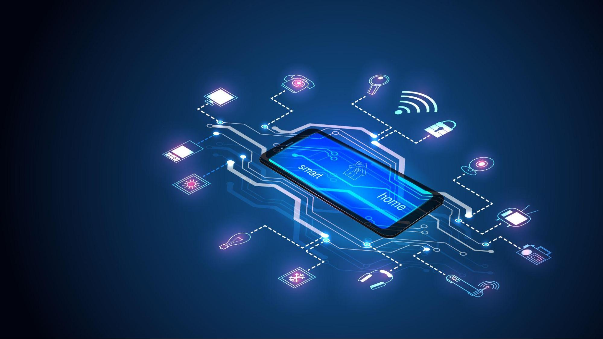
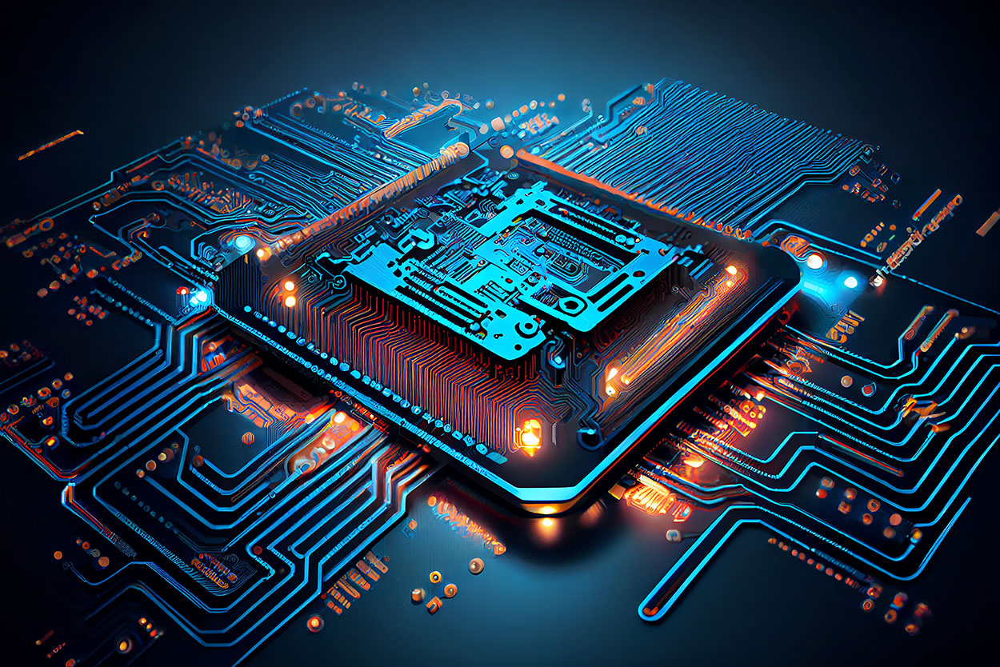

Artificial intelligence (AI)

Artificial intelligence (AI), in its broadest sense, is intelligence exhibited by machines, particularly computer systems. It is a field of research in computer science that develops and studies methods and software that enable machines to perceive their environment and use learning and intelligence to take actions that maximize their chances of achieving defined goals. Such machines may be called AIs.
Computer security

Computer security (also cybersecurity, digital security, or information technology (IT) security) is the protection of computer systems and networks from threats that may result in unauthorized information disclosure, theft of (or damage to) hardware, software, or data, as well as from the disruption or misdirection of the services they provide.
Internet of things
The Internet of things (IoT) describes devices with sensors, processing ability, software and other technologies that connect and exchange data with other devices and systems over the Internet or other communications networks. The Internet of things encompasses electronics, communication, and computer science engineering. "Internet of things" has been considered a misnomer because devices do not need to be connected to the public internet; they only need to be connected to a network and be individually addressable.
Quantum computing
A quantum computer is a computer that exploits quantum mechanical phenomena. On small scales, physical matter exhibits properties of both particles and waves, and quantum computing leverages this behavior using specialized hardware. Classical physics cannot explain the operation of these quantum devices, and a scalable quantum computer could perform some calculations exponentially faster than any modern "classical" computer. In particular, a large-scale quantum computer could break widely used encryption schemes and aid physicists in performing physical simulations; however, the current state of the art is largely experimental and impractical, with several obstacles to useful applications.